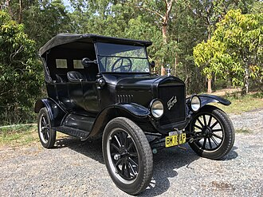
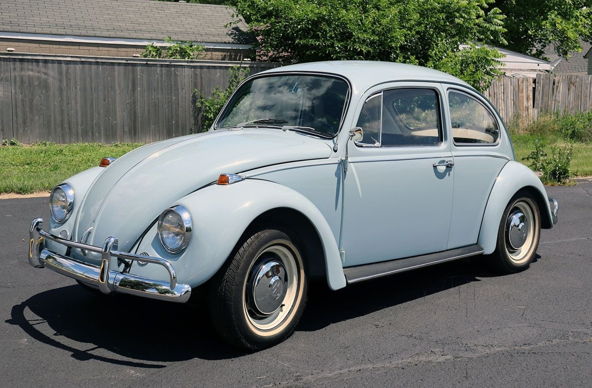
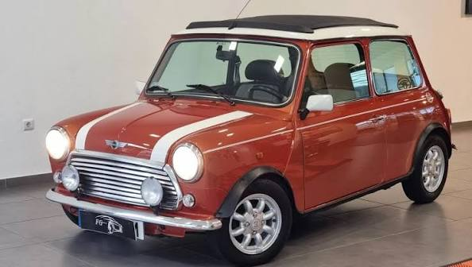
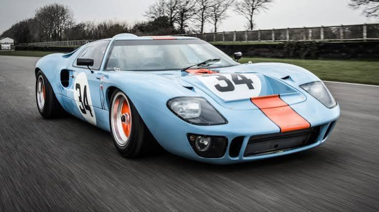
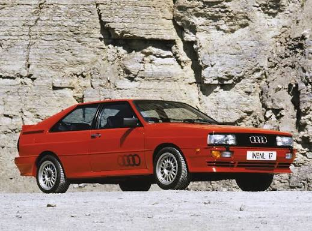
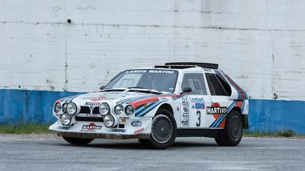
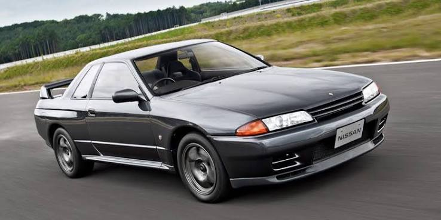
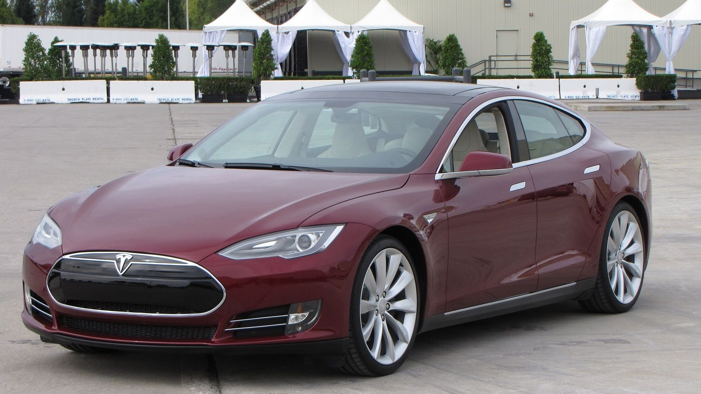

Esta é a crónica da evolução automóvel. Uma viagem pelos marcos de engenharia, crises geopolíticas, rivalidades de sangue e quebras de paradigma que transformaram uma frágil carruagem mecânica na maior força de mobilidade da história da humanidade.
1886
Antes de 1886, as tentativas de criar veículos autopropulsionados dependiam de pesadas e perigosas caldeiras a vapor ou de motores primitivos a gás que explodiam com facilidade. Na Alemanha, o engenheiro Karl Benz revolucionou a história ao desenhar um motor a quatro tempos monocilíndrico, integrado de raiz num chassis de três rodas com tubos de aço e painéis de madeira. O Benz Patent-Motorwagen funcionava a ligroína (um derivado do petróleo comprado em farmácias na altura) e gerava uns modestos 0.75 cavalos de potência. O verdadeiro teste que provou a viabilidade do invento foi feito pela sua esposa, Bertha Benz, que em 1888 fez a primeira viagem de longa distância (106 km) sem o conhecimento do marido. Bertha não só conduziu, como inventou as pastilhas de travão ao usar couro para revestir os blocos de madeira que desgastavam com a fricção, provando que o automóvel tinha futuro prático.

1908
Até ao início do século XX, os carros eram construídos de forma artesanal por mecânicos altamente qualificados, o que tornava cada unidade caríssima e personalizada, um brinquedo exclusivo para a elite financeira. Em Detroit, Henry Ford quebrou este monopólio com o Ford Model T e a introdução da linha de montagem industrial móvel inspirada nos matadouros de Chicago. Em vez de os operários irem até ao carro, o chassis movia-se por uma passadeira rolante e cada trabalhador executava apenas uma tarefa simples e repetitiva. O tempo de fabrico de um carro caiu de 12 horas para apenas 93 minutos. O preço do Model T despencou de 850 dólares para menos de 300 dólares, permitindo aos próprios operários da fábrica comprar o que construíam. Este feito estabeleceu as bases do consumo de massas, padronizou os comandos do automóvel (como o volante à esquerda e os três pedais) e colocou literalmente o mundo sobre rodas.

1938
Na década de 1930, a Europa enfrentava tensões políticas extremas e uma economia em reconstrução. O engenheiro Ferdinand Porsche recebeu a missão de criar um "carro do povo" (Volkswagen) na Alemanha: um veículo capaz de transportar dois adultos e três crianças, manter 100 km/h nas novas autoestradas (Autobahns) e consumir pouquíssimo combustível. Assim nasceu o Beetle (Carocha). Para sobreviver aos invernos rigorosos e à falta de infraestruturas, Porsche tomou decisões de engenharia geniais: colocou o motor na traseira para dar tração direta às rodas motrizes e optou por uma refrigeração a ar, eliminando o radiador, a água e o risco de congelamento. Embora a Segunda Guerra Mundial tenha interrompido a produção civil, a simplicidade indestrutível do Carocha fez dele um sucesso absoluto no pós-guerra, vendendo mais de 21 milhões de unidades e demonstrando que a engenharia inteligente e barata podia vencer a complexidade.

1959
Em 1956, a Crise do Canal de Suez provocou o racionamento de petróleo na Europa, tornando os carros grandes inviáveis. Em resposta, Alec Issigonis foi incumbido pela British Motor Corporation de criar um carro ultra-compacto, mas com espaço real no interior. A sua solução redesenhou o automóvel moderno para sempre: ele pegou no motor de 4 cilindros e montou-o na horizontal (transversalmente) na parte da frente, empurrando as quatro rodas para os cantos extremos do chassis. Para poupar ainda mais espaço, a caixa de velocidades foi colocada diretamente por baixo do motor, partilhando o mesmo óleo, e a tração passou a ser dianteira. Isto fez com que 80% do volume do carro fosse inteiramente dedicado aos passageiros e bagagens. O Mini provou que a tração à frente e o motor transversal eram a fórmula perfeita para a eficiência de espaço, uma configuração copiada por quase todas as marcas atuais para carros do dia a dia.

1963
A engenharia de alta performance sempre foi movida por egos gigantescos. Ferruccio Lamborghini era um industrial italiano milionário que fez fortuna a construir tratores agrícolas no pós-guerra e possuía várias Ferraris de luxo. Constantemente frustrado com as embraiagens frágeis dos seus carros desportivos, Ferruccio desmontou uma das suas Ferraris e descobriu que a embraiagem usada era exatamente igual à que ele instalava nos seus tratores comerciais, embora a Ferrari cobrasse um preço exorbitante por ela. Ferruccio viajou até Maranello para confrontar Enzo Ferrari. O orgulhoso "Il Commendatore" respondeu com desdém: "O problema não é do carro, Lamborghini, o problema é que tu só sabes conduzir tratores e não sabe lidar com um Ferrari". Profundamente ofendido com a arrogância de Enzo, Ferruccio voltou para a sua fábrica decidido a construir os melhores supercarros do mundo para esmagar a Ferrari. Meses depois fundava a Automobili Lamborghini, contratando ex-engenheiros da Ferrari para criar lendas como o Miura e o Countach, redefinindo o conceito de design agressivo e exótico.

1966
No início dos anos 60, Henry Ford II queria mudar a imagem conservadora da sua marca e decidiu comprar a Ferrari, que enfrentava dificuldades financeiras. Após meses de auditorias dispendiosas, quando o contrato estava prestes a ser assinado, Enzo Ferrari percebeu que a cláusula do acordo ditava que a Ford controlaria o orçamento e as decisões da sua amada divisão de corridas (Scuderia Ferrari). Enzo insultou a delegação americana e cancelou o negócio abruptamente. Furioso e humilhado, Henry Ford II reuniu os seus executivos com uma única ordem: "Construam um carro que esmague a Ferrari na corrida mais prestigiada do planeta: as 24 Horas de Le Mans". Após fracassos iniciais perigosos devido à instabilidade aerodinâmica, a Ford entregou o projeto ao genial Carroll Shelby e ao implacável piloto de testes Ken Miles. Juntos, desenvolveram o Ford GT40, um monstro com motor V8 de 7 litros. Em 1966, a Ford não só venceu, como conquistou o 1º, 2º e 3º lugar em simultâneo, quebrando o domínio absoluto da Ferrari e provando que a determinação industrial americana conseguia vencer o artesanato desportivo europeu.

1980
Até ao final da década de 70, os sistemas de tração às quatro rodas (4WD) eram mecânicas pesadas, lentas e exclusivas de jipes militares ou carrinhas agrícolas de trabalho. Os carros de corrida e de estrada rápidos usavam exclusivamente tração traseira. O engenheiro da Audi, Jörg Bensinger, descobriu que um jipe militar da Volkswagen com metade da potência de um desportivo conseguia andar muito mais rápido na neve profunda devido à distribuição de força nas quatro rodas. A Audi decidiu adaptar este conceito num carro de turismo desportivo. O resultado foi o Audi Quattro, que introduziu um diferencial central leve que dividia a potência continuamente entre os dois eixos sem acrescentar peso excessivo. Quando entrou no Campeonato Mundial de Ralis (WRC), o carro parecia ignorar as leis da física, aderindo à lama, gravilha e gelo de uma forma que os carros de tração traseira não conseguiam acompanhar. Esta inovação alterou por completo os padrões de segurança ativa da indústria e provou que a tração integral era vital para transferir grandes níveis de potência para o asfalto com controlo absoluto.

1982
A Federação Internacional do Automóvel decidiu libertar os engenheiros de todas as restrições ao criar a categoria "Grupo B" no desporto automóvel. As regras exigiam apenas que as marcas construíssem 200 unidades de estrada para homologar o carro de corrida. Sem limites de pressão de turbo, peso ou materiais, as marcas criaram autênticos caças de combate para a terra batida. Chassis de tubos de titânio revestidos com fibra de carbono e Kevlar, equipados com motores que combinavam compressores volumétricos (para baixas rotações) e turbos gigantescos (para altas rotações), ultrapassavam facilmente os 500 e 600 cavalos de potência. Carros como o Lancia Delta S4 e o Peugeot 205 T16 aceleravam de 0 a 100 km/h em menos de 2.5 segundos na terra. No entanto, o avanço tecnológico ultrapassou os reflexos biológicos dos pilotos. Sem sistemas de controlo eletrónico e rodeados por multidões de milhares de adeptos que se colocavam no meio das pistas, a era colapsou em 1986 após acidentes fatais como a morte do piloto Henri Toivonen, cujo carro explodiu ao cair numa ravina. O legado do Grupo B forçou a indústria a focar-se no desenvolvimento urgente de células de segurança habitacionais e sistemas de corte de combustível automáticos.

1989
Durante a explosão económica do Japão nos anos 80, a Nissan decidiu criar um veículo imbatível para o campeonato de Grupo A: o Skyline GT-R R32. Este carro mudou a engenharia automóvel porque substituiu a pura força mecânica bruta por sistemas geridos eletronicamente por computadores. Introduziu o sistema ATTESA E-TS, um mecanismo de tração integral inteligente que lia a perda de tração de cada roda centenas de vezes por segundo e enviava a potência exata para o eixo dianteiro apenas quando necessário, mantendo o comportamento ágil de tração traseira nas curvas. Tinha também o sistema Super HICAS, que permitia às quatro rodas virarem em simultâneo para curvar a velocidades impossíveis. Sob o capot descansava o bloco RB26DETT de 2.6 litros bi-turbo, concebido para aguentar mais de 600 cavalos com peças de fábrica. Ao vencer todas as 29 corridas do campeonato japonês e humilhar os desportivos europeus na Austrália, a imprensa deu-lhe a alcunha de "Godzilla", o monstro destruidor do Japão. Este carro inaugurou a era dourada do mercado JDM e estabeleceu a eletrónica como o cérebro da performance moderna.

2012
Até 2012, os veículos elétricos eram vistos pelas construtoras centenárias como soluções de nicho, lentas, com autonomias ridículas e designs que pareciam caixas de plástico sem qualquer apelo emocional. A Tesla Motors destruiu este preconceito com o lançamento do Model S, uma berlina topo de gama desenhada de raiz em Silicon Valley. Em vez de adaptar baterias num carro a combustão existente, a Tesla desenhou um chassis estilo "skate", onde as baterias pesadas de iões de lítio formavam o próprio chão do carro, baixando o centro de gravidade e oferecendo uma estabilidade de condução ímpar. O motor elétrico, compacto e posicionado diretamente no eixo, entregava binário instantâneo (potência máxima ao toque do pedal), fazendo o carro acelerar mais rápido do que hipercarros de milhões de euros. Além disso, o Model S introduziu a digitalização total: o painel de bordo foi substituído por um ecrã central gigante e o carro passou a receber atualizações de software remotas (Over-The-Air) que melhoravam a potência e a autonomia durante a noite. A Tesla provou ao mundo que a eletricidade podia superar o motor a combustão em performance, conforto e luxo, forçando toda a indústria global a investir biliões na mudança definitiva para a eletrificação e conectividade digital.
